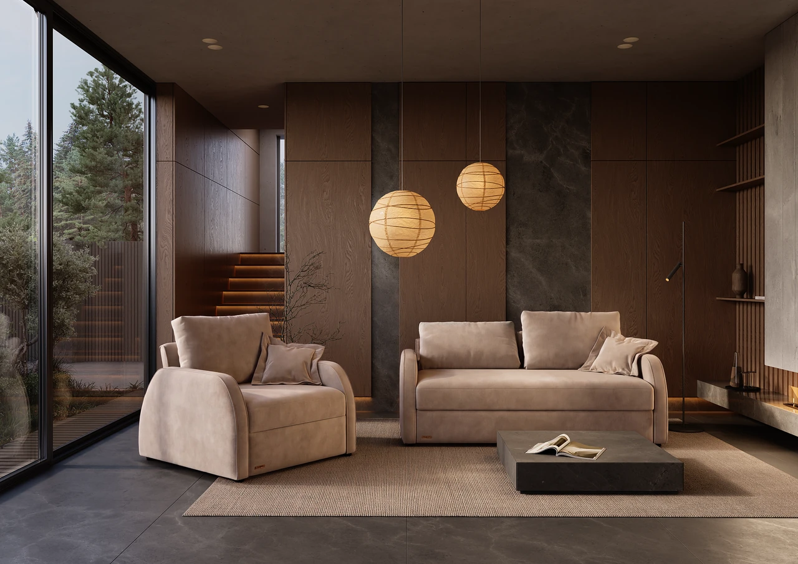
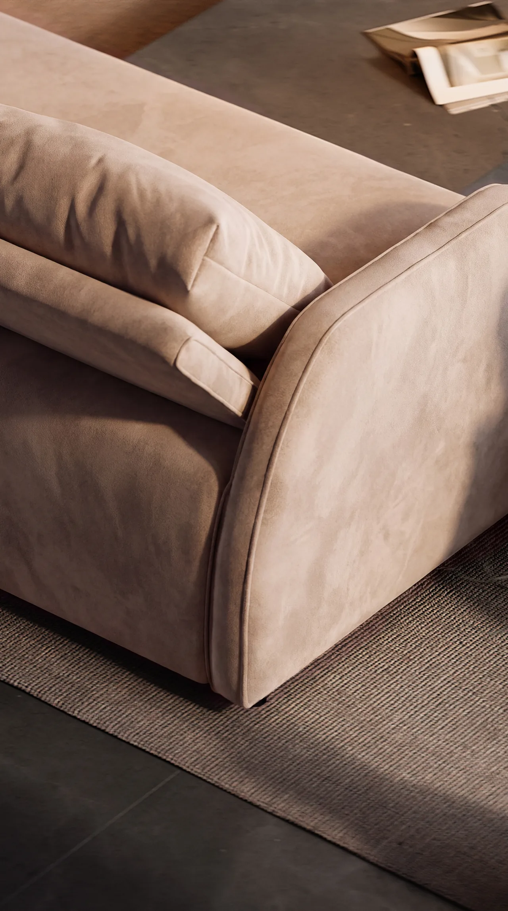
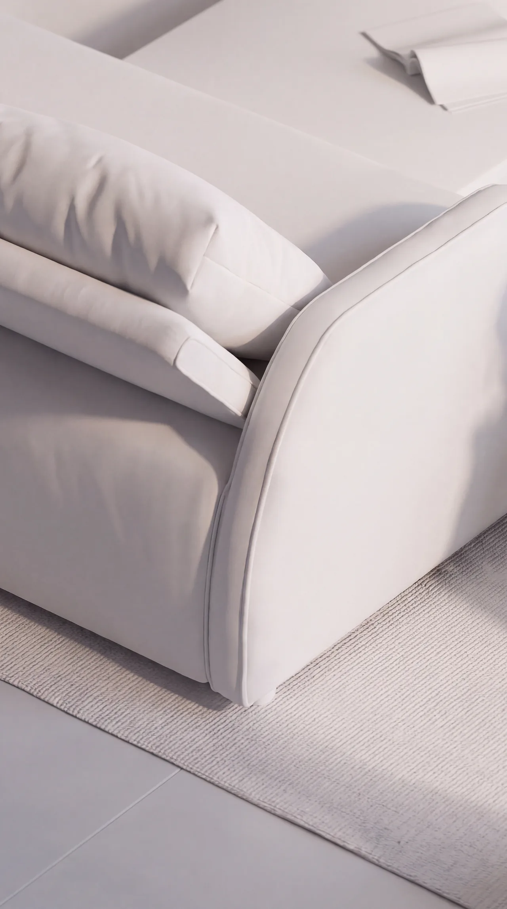
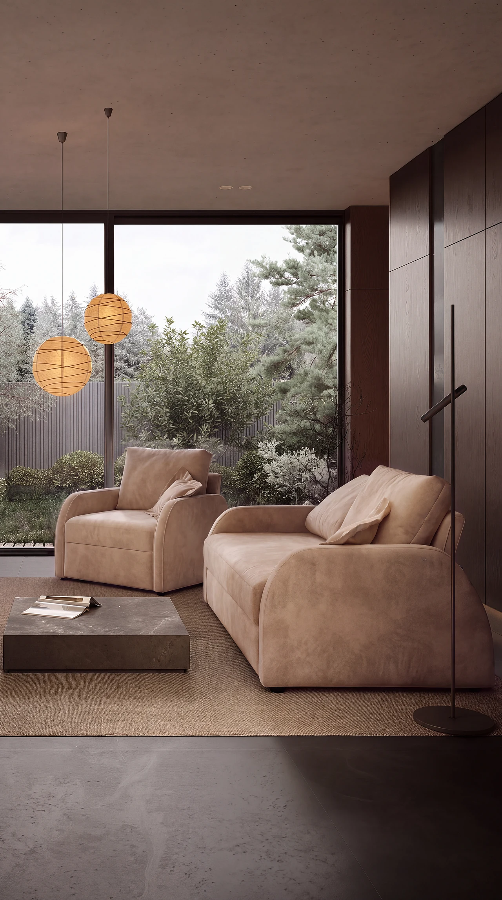

Living room with a garden view
A living room built around the view: floor-to-ceiling glazing onto a pine garden, oak-veneer wall panels with dark marble inserts, a lit stair and paper lanterns over the seating.
- My part
- Interior concept and scene: layout, materials, lighting, rendering. The furniture models were supplied.
- Year
- 2026

Garden on one side, a warm wall on the other
The seating opens to the garden through full-height glazing, and the opposite wall is a calm rhythm of oak panels and dark marble. Lanterns hang low over the sofa group, and hidden LED strips under the panels and on the stair carry the light into the evening.
- Style
- Warm minimalism with natural materials and a garden view.
- Zones
- Seating area facing the garden, armchair corner by the glazing, stair to the upper level.
- Materials
- Oak-veneer wall panels, dark marble inserts, concrete ceiling, large stone-look floor tiles, jute rug, stone coffee table, suede-like upholstery.
- Lighting
- Daylight from the glazing, paper lantern pendants, recessed downlights, hidden LED strips under the wall panels and stair treads, a slim floor lamp.
- Software
- 3ds Max: scene and layout. Corona Renderer: materials, light, render. Photoshop: post-production.
Room views


ClayFinalClay and suede
The same close-up as a clay render and with the final suede-like material.
Drag the handle or use the arrow keys to compare.

Upholstery options
The same living room in five fabrics: suede-like, bouclé, plush and two linen-look weaves.
Final renders
Clay and final
Clay renders on top, the final shots right below.
Camera animation
Short cinematic camera moves built from the still renders.